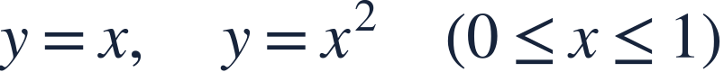
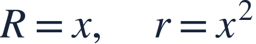
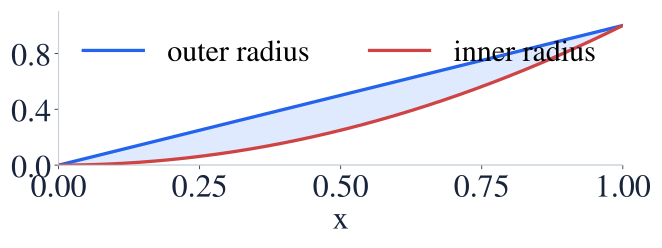
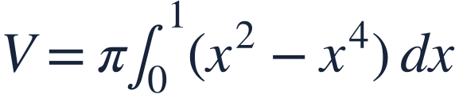
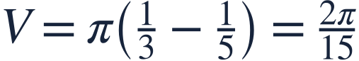
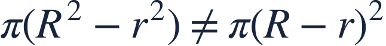
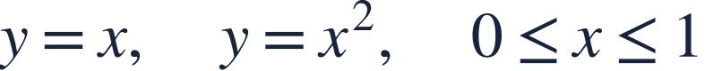

The washer method and course review
와셔법과 과정 정리

A washer removes the inner disk; finish by checking geometry, bounds and units.
와셔는 안쪽 원판을 뺍니다. 기하 관계, 구간, 단위까지 확인하며 마무리합니다.

A washer removes the inner disk; finish by checking geometry, bounds and units.
와셔는 안쪽 원판을 뺍니다. 기하 관계, 구간, 단위까지 확인하며 마무리합니다.

Rotate the enclosed region about the x-axis. Recall that x≥x² here.
둘러싸인 영역을 x축 둘레로 회전합니다. 이 구간에서는 x≥x²입니다.

The cross-sectional area is outer disk area minus inner disk area.
단면의 넓이는 바깥 원판 넓이에서 안쪽 원판 넓이를 뺀 값입니다.
Square each radius separately, then subtract.
각 반지름을 따로 제곱한 뒤 뺍니다.

The intersection inputs set the integration bounds.
교점의 입력값으로 적분구간을 정합니다.

Across calculus, connect the model, conditions, method and interpretation.
미적분 전체에서 모형, 조건, 방법, 해석을 연결하는 습관을 유지하세요.

The washer area is π(R²−r²), not π(R−r)².
와셔 넓이는 π(R²−r²)이며 π(R−r)²이 아닙니다.

Rotate the same region about y=2. Find the volume.
같은 영역을 y=2 둘레로 회전한 부피를 구하세요.